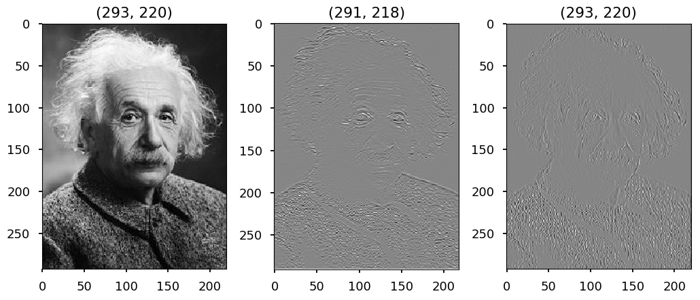
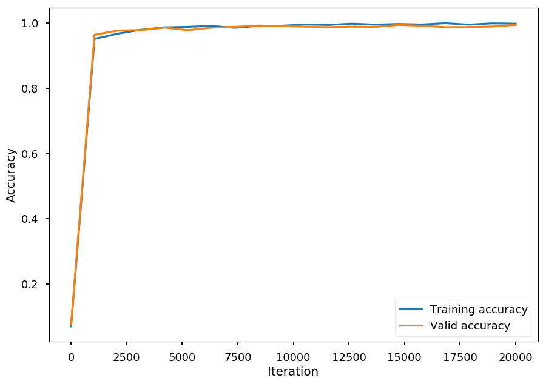
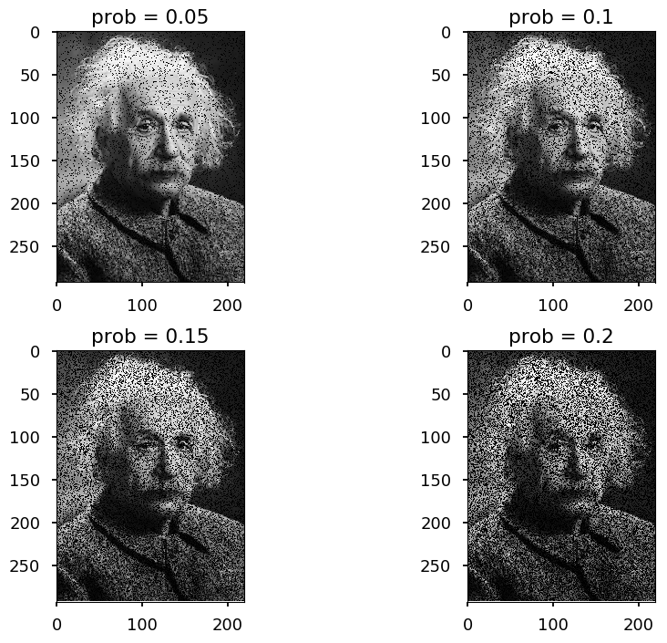

Deep learning¶
Deep-learning methods are representation-learning methods with multiple levels of representation, obtained by composing simple but non-linear modules that each transform the representation at one level (starting with the raw input) into a representation at a higher, slightly more abstract level.
The key aspect of deep learning is that these layers of features are not designed by human engineers: they are learned from data using a general-purpose learning procedure
Deep learning, Y. LeCun, Y. Bengio, G Hinton, Nature 521 (7553), 436
-
There are many deep learning (DL) methods these days, including:
-
convolutional neural networks (CNN) - deep feed-forward neural networks (discussed today)
-
recurrent neural networks (RNN) - connections between nodes can go backward (used e.g. for speech recognition)
-
generative adversarial networks (GAN) - system of two neural networks competing with each other (one generates fake data and the other compare them with real data)
-
and many others...
-
# our standard imports: matplotlib and numpy import matplotlib.pyplot as plt import numpy as np # just to overwrite default colab style plt.style.use('default') plt.style.use('seaborn-talk')
Convolutional neural networks¶
-
CNN is the type of feed-forward neural networks (neurons are connected only "forward")
-
There are several types of layers typically used to construct CNN
-
convolutional
-
pooling
-
fully connected
-
Convolutional layer¶
- Convolution operation performs dot product between filters and local regions of an input
INPUT CONVOLUTION OUTPUT
| 0 1 0 1 1 |
| 1 1 0 1 0 | | 1 0 1 | | ? ? ? |
| 1 0 1 0 1 | x | 0 1 0 | -> | ? ? ? |
| 1 1 0 1 0 | | 1 0 1 | | ? ? ? |
| 0 0 1 1 0 |
STEP 1
| [0 1 0] 1 1 |
| [1 1 0] 1 0 | | 1 0 1 | | 1*0 0*1 1*0 | | 0 0 0 | | 3 - - |
| [1 0 1] 0 1 | x | 0 1 0 | -> | 0*1 1*1 0*0 | = | 0 1 0 | = 3 -> | - - - |
| 1 1 0 1 0 | | 1 0 1 | | 1*1 0*0 1*1 | | 1 0 1 | | - - - |
| 0 0 1 1 0 |
STEP 2
| 0 [1 0 1] 1 |
| 1 [1 0 1] 0 | | 1 0 1 | | 1*1 0*0 1*1 | | 1 0 1 | | 3 2 - |
| 1 [0 1 0] 1 | x | 0 1 0 | -> | 0*1 1*0 0*1 | = | 0 0 0 | = 2 -> | - - - |
| 1 1 0 1 0 | | 1 0 1 | | 1*0 0*1 1*0 | | 0 0 0 | | - - - |
| 0 0 1 1 0 |
...
STEP 9
| 0 1 0 1 1 |
| 1 1 0 1 0 | | 1 0 1 | | 1*1 0*0 1*1 | | 1 0 1 | | 3 2 4 |
| 1 0 [1 0 1] | x | 0 1 0 | -> | 0*0 1*1 0*0 | = | 0 1 0 | = 2 -> | 2 5 0 |
| 1 1 [0 1 0] | | 1 0 1 | | 1*1 0*1 1*0 | | 1 0 0 | | 4 1 4 |
| 0 0 [1 1 0] |
- Please note, that the output size (W_{out} x H_{out}) is determined by the input size (W_{in} x H_{in}) and the kernel size (W_{f} x H_{f}):
$\begin{eqnarray}
W_{out} & = & W_{in} - W_{f} + 1 \\
H_{out} & = & H_{in} - H_{f} + 1
\end{eqnarray}$
- Please note, that input is normalized to [0, 1], but the output is not!
Example¶
from skimage import io from scipy.signal import convolve2d url = "https://upload.wikimedia.org/wikipedia/commons/thumb/d/d3/Albert_Einstein_Head.jpg/220px-Albert_Einstein_Head.jpg" img = io.imread(url, as_grey=True) # define first filter filter01 = np.array([[0, 1, 0], [0, -2, 0], [0, 1, 0]]) # define first filter filter02 = np.array([[0, 0, 0], [1, -2, 1], [0, 0, 0]]) # apply filters out01 = convolve2d(img, filter01, mode="valid") out02 = convolve2d(img, filter02, mode="same") plt.subplot(131) plt.title(img.shape) plt.imshow(img, cmap='gray') plt.subplot(132) plt.title(out01.shape) plt.imshow(out01, cmap='gray') plt.subplot(133) plt.title(out02.shape) plt.imshow(out02, cmap='gray') plt.tight_layout()

-
The first filter found horizontal edges
-
The second one found vertical edges, and also kept the original size of the input image
Padding¶
- Padding (zero padding) - adding zeros around an image
| 0 0 0 0 0 0 0 |
| 0 1 0 1 1 | | 0 0 1 0 1 1 0 |
| 1 1 0 1 0 | | 0 1 1 0 1 0 0 |
| 1 0 1 0 1 | -> | 0 1 0 1 0 1 0 |
| 1 1 0 1 0 | | 0 1 1 0 1 0 0 |
| 0 0 1 1 0 | | 0 0 0 1 1 0 0 |
| 0 0 0 0 0 0 0 |
- The output size (W_{out} x H_{out}) is determined by the input size (W_{in} x H_{in}), the kernel size (W_{f} x H_{f}), and the padding size (P)
$\begin{eqnarray}
W_{out} & = & W_{in} - W_{f} + 2P+ 1 \\
H_{out} & = & H_{in} - H_{f} + 2P + 1
\end{eqnarray}$
Stride¶
- Stride controls the movement of the filter
Stride = 1 | [0 1 0] 1 1 | | 0 [1 0 1] 1 | | [1 1 0] 1 0 | | 1 [1 0 1] 0 | | [1 0 1] 0 1 | -> | 1 [0 1 0] 1 | -> ... | 1 1 0 1 0 | | 1 1 0 1 0 | | 0 0 1 1 0 | | 0 0 1 1 0 | Stride = 2 | [0 1 0] 1 1 | | 0 1 [0 1 1] | | [1 1 0] 1 0 | | 1 1 [0 1 0] | | [1 0 1] 0 1 | -> | 1 0 [1 0 1] | -> ... | 1 1 0 1 0 | | 1 1 0 1 0 | | 0 0 1 1 0 | | 0 0 1 1 0 |
- The output size (W_{out} x H_{out}) is determined by the input size (W_{in} x H_{in}), the kernel size (W_{f} x H_{f}), the padding size (P), and the stride size (W_{s} x H_{s})
$\begin{eqnarray}
W_{out} & = & \frac{W_{in} - W_{f} + 2P}{W_{s}}+ 1 \\
H_{out} & = & \frac{H_{in} - H_{f} + 2P}{H_{s}} + 1
\end{eqnarray}$
Summary¶
-
Convolutional layer consist of N filters, so the hyperparameters are:
-
the number of filters
-
the size of the filters
-
padding
-
stride
-
Pooling¶
-
Pooling reduces the size of the input by taking
maxoravgof given part of the data -
Usually, 2x2 max pooling with stride 2 is used (output size = input size / 2)
Max pooling 2x2, stride = 2 | [1 2] 3 4 | | [5 6] 7 8 | | 6 - | | 0 9 1 2 | -> | - - | | 3 4 5 6 | | 1 2 [3 4] | | 5 6 [7 8] | | 6 8 | | 0 9 1 2 | -> | - - | | 3 4 5 6 | | 1 2 3 4 | | 5 6 7 8 | | 6 8 | | [0 9] 1 2 | -> | 9 - | | [3 4] 5 6 | | 1 2 3 4 | | 5 6 7 8 | | 6 8 | | 0 9 [1 2] | -> | 9 6 | | 3 4 [5 6] |
Example¶
from skimage.measure import block_reduce images = [img] # perform 5 poolings for i in range(5): images.append(block_reduce(images[-1], (2, 2), np.max)) # plot them all for i in range(6): plt.subplot(231 + i) plt.imshow(images[i], cmap='gray') plt.tight_layout()

CNN structure¶
- Typical structure of convolutional neural network (src: wildml.com)

- But it may go deeper:

- The first reference from the paper:
[1] Know your meme: We need to go deeper.

Backpropagation¶
-
Filter weights are updated using (as for fully connected layers) backpropagation algorithm
-
Consider input 3x3, filter 2x2, stride 1, no padding
-
The forward pass looks like this
$
\left[\begin{array}{ccc}
x_{11} & x_{12} & x_{13} \\
x_{21} & x_{22} & x_{23} \\
x_{31} & x_{32} & x_{33}
\end{array}\right]\odot
\left[\begin{array}{cc}
w_{11} & w_{12} \\
w_{21} & w_{22}
\end{array}\right] =
\left[\begin{array}{cc}
h_{11} & h_{12} \\
h_{21} & h_{22}
\end{array}\right]
$
$
\begin{eqnarray}
h_{11} & = & w_{11}x_{11} + w_{12}x_{12} + w_{21}x_{21} + w_{22}x_{22} \\
h_{12} & = & w_{11}x_{12} + w_{12}x_{13} + w_{21}x_{22} + w_{22}x_{23} \\
h_{21} & = & w_{11}x_{21} + w_{12}x_{22} + w_{21}x_{31} + w_{22}x_{32} \\
h_{22} & = & w_{11}x_{22} + w_{12}x_{23} + w_{21}x_{32} + w_{22}x_{33}
\end{eqnarray}
$
- And the backward pass (\partial w_{ij} \equiv \frac{\partial L}{\partial w_{ij}} and \partial h_{ij} \equiv \frac{\partial L}{\partial h_{ij}} )
$
\begin{eqnarray}
\partial w_{11} & = & \partial h_{11}x_{11} + \partial h_{12}x_{12} + \partial h_{21}x_{21} + \partial h_{22}x_{22} \\
\partial w_{12} & = & \partial h_{11}x_{12} + \partial h_{12}x_{13} + \partial h_{21}x_{22} + \partial h_{22}x_{23} \\
\partial w_{21} & = & \partial h_{11}x_{21} + \partial h_{12}x_{22} + \partial h_{21}x_{31} + \partial h_{22}x_{32} \\
\partial w_{22} & = & \partial h_{11}x_{22} + \partial h_{12}x_{23} + \partial h_{21}x_{32} + \partial h_{22}x_{33}
\end{eqnarray}
$
Dropout¶
-
Very often convolution layers (with or without pooling) are followed by fully connected layers
-
Note, that most weights live in fully connected layers, but convolutions are computationally more expensive
-
Dropout is a common technique of regularization
-
Note, that it should be used together with other methods like L1 of or L2 regularizations
-
Dropout deactivates random set of neurons during training phase (usually about 50%)
-
This improves generalization - force different neurons to learn the same concept
-
Usually, dropout is applied to fully connected layers
Deep MNIST¶
-
Last week we got about 92% accuracy on MNIST dataset
-
Today we are going to do better with CNN
-
First, lets load the data
import tensorflow as tf from tensorflow.examples.tutorials.mnist import input_data # to avoid warnings printed in the notebook tf.logging.set_verbosity(tf.logging.ERROR) # one hot -> label 0-9 -> 0...01, 0...10, ... mnist = input_data.read_data_sets("/tmp/", one_hot=True)
Extracting /tmp/train-images-idx3-ubyte.gz Extracting /tmp/train-labels-idx1-ubyte.gz Extracting /tmp/t10k-images-idx3-ubyte.gz Extracting /tmp/t10k-labels-idx1-ubyte.gz
- Create placeholders for tensors to fed
x = tf.placeholder(tf.float32, [None, 784]) # img -> 28x28 -> 784 y = tf.placeholder(tf.float32, [None, 10]) # 10 classes
- Build the network
# reshape to 28x28 image with 1 color channel x_image = tf.reshape(x, [-1, 28, 28, 1]) ##### The first convolution (conv1) with 32 filters 5x5 ##### # init weights randomly from normal distribution with bounds W_conv1 = tf.Variable(tf.truncated_normal([5, 5, 1, 32], stddev=0.1)) # init bias with 0.1 b_conv1 = tf.Variable(tf.constant(0.1, shape=[32])) # create convolution # input tensor has 4 dimensions: [batch, height, width, channels] # strides defines how to move in each dimension # padding = "SAME" (zero padding) or "VALID" (no padding) conv1 = tf.nn.conv2d(x_image, W_conv1, strides=[1, 1, 1, 1], padding='SAME') # ReLU activation funtion h_conv1 = tf.nn.relu(conv1 + b_conv1) # pooling layer 2x2 with stride 2 h_pool1 = tf.nn.max_pool(h_conv1, ksize=[1, 2, 2, 1], strides=[1, 2, 2, 1], padding='SAME') ##### The second convolutional layer - maps 32 feature maps to 64 ##### W_conv2 = tf.Variable(tf.truncated_normal([5, 5, 32, 64], stddev=0.1)) b_conv2 = tf.Variable(tf.constant(0.1, shape=[64])) # last pooling layer is an input for this layer conv2 = tf.nn.conv2d(h_pool1, W_conv2, strides=[1, 1, 1, 1], padding='SAME') h_conv2 = tf.nn.relu(conv2 + b_conv2) h_pool2 = tf.nn.max_pool(h_conv2, ksize=[1, 2, 2, 1], strides=[1, 2, 2, 1], padding='SAME') # Convolution is done with zero padding - preserves image size # Each pooling downsamples by 2x # 28x28 -> 14x14x32 -> 7x7x64 ###### Fully connected layer maps above to 1024 features ##### W_fc1 = tf.Variable(tf.truncated_normal([7 * 7 * 64, 1024], stddev=0.1)) b_fc1 = tf.Variable(tf.constant(0.1, shape=[1024])) # we need to reshape last layer h_pool2_flat = tf.reshape(h_pool2, [-1, 7 * 7 * 64]) # matmul - matrix multiplication h_fc1 = tf.nn.relu(tf.matmul(h_pool2_flat, W_fc1) + b_fc1) ##### Dropout layer ##### # keep_prob controls no. of deactivated neurons keep_prob = tf.placeholder(tf.float32) h_fc1_drop = tf.nn.dropout(h_fc1, keep_prob) ##### Output layer ##### # Map the 1024 features to 10 classes, one for each digit W_fc2 = tf.Variable(tf.truncated_normal([1024, 10], stddev=0.1)) b_fc2 = tf.Variable(tf.constant(0.1, shape=[10])) out = tf.matmul(h_fc1_drop, W_fc2) + b_fc2
-
Before training we need to define:
-
loss function
-
learning algorithm
-
# loss function cross_entropy = tf.reduce_mean( tf.nn.softmax_cross_entropy_with_logits(labels=y, logits=out)) # training step - using Adam SGD with initial learning rate 1e-4 train_step = tf.train.AdamOptimizer(1e-4).minimize(cross_entropy)
- For convenience we define a method to measure accuracy
# argmax returns the index of the heighest index in a tensor # equal returns True / False if prediction is equal/not equal to true label # cast would convert True/False to 1/0, so we can calculate the average correct_prediction = tf.equal(tf.argmax(out, 1), tf.argmax(y, 1)) accuracy = tf.reduce_mean(tf.cast(correct_prediction, tf.float32))
- Make sure we are running on GPU
device_name = tf.test.gpu_device_name() if device_name != '/device:GPU:0': raise SystemError('GPU device not found') print('Found GPU at: {}'.format(device_name))
Found GPU at: /device:GPU:0
- Finally we can train the network on MNIST dataset
# to use GPU through Colaboratory config = tf.ConfigProto() config.gpu_options.allow_growth = True nof_iterations = 20000 # number of training steps test_every = 1000 # calculate accuracy every test_every step batch_size = 32 # traning batch size acc_batch = 2048 # the size of a subset used to measure accuracy train_accuracy = [] valid_accuracy = [] with tf.Session(config=config) as sess: # initialize weights and biases sess.run(tf.global_variables_initializer()) for i in range(nof_iterations): # take mini batch from MNIST dataset batch = mnist.train.next_batch(batch_size) # every test_every iterations save current accuracy scores if i % test_every == 0: # for testing we do not want dropout neurons - keep_prob = 1 # to save time we calculate accuracy on a subset of data train_batch = mnist.train.next_batch(acc_batch) train_accuracy.append(accuracy.eval( feed_dict={x: train_batch[0], y: train_batch[1], keep_prob: 1.0})) test_batch = mnist.test.next_batch(acc_batch) valid_accuracy.append(accuracy.eval( feed_dict={x: test_batch[0], y: test_batch[1], keep_prob: 1.0})) # run training step with 50% neurons deactivated train_step.run(feed_dict={x: batch[0], y: batch[1], keep_prob: 0.5}) # calculate the accuracy on the whole testing dataset print('test accuracy %g' % accuracy.eval( feed_dict={x: mnist.test.images, y: mnist.test.labels, keep_prob: 1.0}))
test accuracy 0.9915
iterations = np.linspace(0, nof_iterations, nof_iterations // test_every) plt.xlabel('Iteration') plt.ylabel('Accuracy') plt.plot(iterations, train_accuracy, label='Training accuracy') plt.plot(iterations, valid_accuracy, label='Valid accuracy') plt.legend();

Batch normalization¶
-
As discussed before, usually data preprocessing includes data normalization (or feature scaling)
-
Let x be a feature vector:
-
rescaling: \hat x = \frac{x - \min(x)}{\max(x) - \min(x)}
-
standarization: \hat x = \frac{x - \text{mean}(x)}{\sigma}, where \sigma - standard deviation
-
...
-
-
Normalization (usually) helps to train the network
-
It does not mean, that you would always normalize your data. Consider developing an algorithm to recognize cars on a picture and having training photos with cars in daylight and nightlight:
-
Scenario 1: the goal is to just recognize a car - data can be normalized, so the network does not have to learn the difference between day and night
-
Scenario 2: the additional goal is distinguish photos of cars at night and during the day - data should not be normalized as you lose valuable information
-
-
Similarly, one can normalize the output of hidden layer to increase stability of a network
BN layer¶
-
The idea is to make activations unit gaussian by scaling the input x
-
Let X = \{x_1, \cdots, x_N\} be a batch of D-dimensional vectors
-
We define mini-batch mean and mini-batch variance:
$
\begin{eqnarray}
\mu & = & \frac{1}{N}\sum\limits_{i=1}^{N}x_i \\
\sigma^2 & = & \frac{1}{N}\sum\limits_{i=1}^{N}\left(x_i - \mu\right)^2
\end{eqnarray}
$
-
Note, that \mu, \sigma^2 \in\mathcal{R}^D
-
And normalized input:
\hat x_i = \frac{x_i - \mu}{\sqrt{\sigma^2 + \varepsilon}}
-
Where \varepsilon << 1 is just to ensure denominator not equal zero
-
Please note, that in the original paper the mean and the variance are calculated:
-
for batch (training)
-
for the whole training dataset (inference)
-
-
BN layer is usually put after fully connected layer (or convolution), e.g.
|----| |----| |------| |----| |----| -> | FC | -> | BN | -> | tanh | -> | FC | -> | BN | -> ... |----| |----| |------| |----| |----|
-
The problem is - do we really a unit gaussian input for
tanh? -
The idea - let the network to squash the range if it wants to:
y_i = \gamma \hat x_i + \beta
-
Where \gamma, \beta are trainable parameters
-
Note, that the network can learn:
$
\begin{eqnarray}
\gamma & = & \sqrt{\sigma^2} \\
\beta & = & \mu
\end{eqnarray}
$
-
to recover the original activation!
-
Thus, we say "I normalized input for you, but feel free to undo this if you want to"
-
In order to use BN in backpropgation scheme one needs to calculate:
-
\frac{\partial L}{\partial \gamma} to perform SGD on \gamma
-
\frac{\partial L}{\partial \beta} to perform SGD on \beta
-
\frac{\partial L}{\partial x_i} to pass on the gradient signal to lower layers
-
-
which it not a problem since \hat x_i is differentiable function
Data augmentation¶
-
Data augmentation is used to increase the number of training samples
-
The common methods for image data augmenation are:
-
flipping
-
rotation
-
translation
-
scaling
-
adding noise
-
...
-
-
The goal is to make the network invariant to given tranformations
-
E.g. if the goal is to find a car on a picture it does not matter how it is oriented, what is its position or color etc
Flipping¶
img_flip_x = np.flip(img, axis=1) img_flip_y = np.flip(img, axis=0) img_flip_xy = np.flip(img_flip_y, axis=1) plt.subplot(221) plt.title('original') plt.imshow(img, cmap='gray') plt.subplot(222) plt.title('x-flip') plt.imshow(img_flip_x, cmap='gray') plt.subplot(223) plt.title('y-flip') plt.imshow(img_flip_y, cmap='gray') plt.subplot(224) plt.title('xy-flip') plt.imshow(img_flip_xy, cmap='gray') plt.tight_layout()

Rotation¶
from scipy.ndimage.interpolation import rotate for i, angle in enumerate((30, 60, 90, 120)): img_rot = rotate(img, angle=angle) plt.subplot(221+i) plt.title("angle = {}".format(angle)) plt.imshow(img_rot, cmap='gray') plt.tight_layout()

-
Note, that rotations may cause extra background (if not multiplicity of 90^0)
-
This may or may not be a problem
-
Also, rotated images habe different dimensions than the original one, so one need to crop it
Translation¶
from scipy.ndimage.interpolation import shift for i, (dx, dy) in enumerate(((30, 30), (60, 60), (-30, -30), (-60, -60))): img_trans = shift(img, (dx, dy)) plt.subplot(221+i) plt.title("dx, dy = {}, {}".format(dx, dy)) plt.imshow(img_trans, cmap='gray') plt.tight_layout()

Scaling¶
from skimage.transform import rescale for i, scale in enumerate((1., 0.9, 0.8, 0.7)): img_scaled = rescale(img, scale).copy() img_scaled = np.pad(img_scaled, (img.shape[0] - img_scaled.shape[0])//2, mode="constant") plt.subplot(221+i) plt.title("scale = {}".format(scale)) plt.imshow(img_scaled, cmap='gray') plt.tight_layout()
/usr/local/lib/python3.6/dist-packages/skimage/transform/_warps.py:84: UserWarning: The default mode, 'constant', will be changed to 'reflect' in skimage 0.15.
warn("The default mode, 'constant', will be changed to 'reflect' in "

Noise¶
# salt and pepper noise for i, prob in enumerate((0.05, 0.10, 0.15, 0.20)): img_noised = img.copy() rnd = np.random.rand(img.shape[0], img.shape[1]) img_noised[rnd < prob] = 0 # pepper img_noised[rnd > 1 - prob] = 1 # salt plt.subplot(221+i) plt.title("prob = {}".format(prob)) plt.imshow(img_noised, cmap='gray') plt.tight_layout()

Summary¶
-
As we do not have more time, we can not go deeper
-
CNN are just an example of deep learning method
-
However, very useful / successful in
-
image classification
-
object detection (R-CNN, Fast R-CNN, Faster R-CNN, Yolo, ...)
-
generating images (GAN, Cycle-GAN, ....)
...
-
-
Deep learning field is growing fast these days and many interesting approaches appear every month
-
The big advantage of DL is reducing feature engineering, but you need a lot of data and may end up with "hyperparameter engineering"
-
The goal of these lectures was to give you the general idea about ML/DL methods
-
and to understand this meme